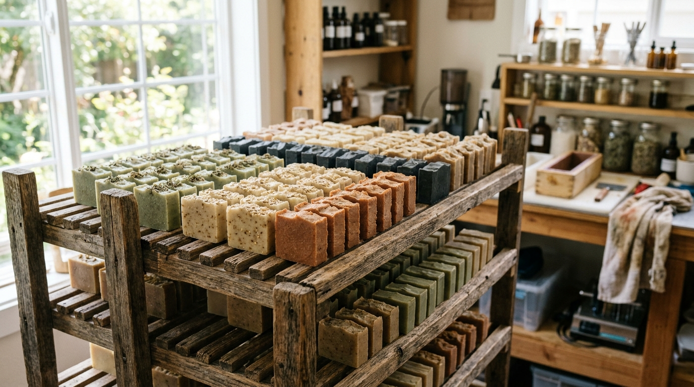

How a Terrible Homemade Candle Turned Me Into a Soap Guy
Hi, I'm Christian Moreno! People usually laugh when they find out my favorite weekend hobby is standing in an apron with safety goggles, turning olive oil and coconut oil into bars of soap. Honestly, I didn't plan on becoming "the soap guy" either.
Two years ago, I tried to save money on holiday gifts by making homemade scented candles for my family. Long story short: I misread the wax thermometer, used way too much cinnamon oil, and produced six jars of grey wax that smelled like burnt toast and refused to stay lit for more than four seconds. My sister still uses hers as a doorstop.
Determined to redeem myself the following month, I borrowed a beginner's book on traditional cold-process soapmaking. My very first batch—a simple mix of olive oil, coconut oil, and ground oatmeal—looked like lumpy mashed potatoes when I poured it into a wooden box. But after sitting on a closet shelf for a month, it turned into the best, creamiest bar of soap I had ever used. Even better, my dry winter hands stopped itching almost overnight. Now, every few weekends, I test a new scent or natural ingredient and write down what worked (and what didn't) right here on this blog.
How I Actually Make Soap at Home (In 5 Simple Steps)
Curious how liquid kitchen oils turn into a solid bar of soap without any weird factory detergents? In this post, I break down the whole process in plain English—from mixing the oils and hitting "pudding stage" to slicing the loaf and letting the bars cure—complete with photos from my workbench.
Read the Step-by-Step Soapmaking Post →Why Homemade Soap Feels So Different From Store-Bought Bars
If you read the fine print on most grocery-store "beauty bars," they aren't actually soap—they are solid detergent cakes. Commercial factories skim off all the natural moisturizing glycerin produced during soapmaking so they can sell it separately for lotions, leaving behind a bar that leaves your skin feeling tight and chalky.
When you make cold-process soap at home using real plant oils (like olive oil, coconut oil, and shea butter), all of that natural glycerin stays locked inside the bar. Plus, by adding a tiny bit of extra oil—a trick soapmakers call "superfatting"—the bar leaves your hands soft instead of squeaky-dry.
4 Recipes Currently Sitting on My Curing Rack
After twenty batches of trial and error, these four recipes are the ones my friends and family always ask to grab whenever they visit:
1. Oatmeal & Raw Honey
My go-to unscented bar. Finely blended rolled oats give it a gentle scrub, and a spoonful of raw honey makes the lather super rich and soothing for dry hands.
2. Peppermint & Rosemary Leaf
The ultimate wake-up shower bar. Made with pure peppermint and rosemary essential oils plus crushed rosemary leaves for a fresh, herbal garden scent.
3. Pine Needle & Charcoal
Smells like a walk in the woods after it rains. A pinch of activated charcoal helps wash away grime after yardwork or a long workout without drying out your skin.
4. Sweet Orange & Pink Clay
Natural rose clay gives this bar a smooth, silky glide and a warm terracotta color, while sweet orange peel oil makes the whole bathroom smell like fresh citrus.